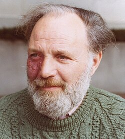

Isadore Singer | |
|---|---|
 Singer in Berkeley, 1977 | |
| Born | May 3, 1924 |
| Died | February 11, 2021 (aged 96) Boxborough, Massachusetts, US |
| Education | |
| Known for | |
| Spouse |
Rosemary Singer (m. 1956) |
| Awards |
|
| Scientific career | |
| Fields | Mathematics |
| Institutions | |
| Thesis | Lie Algebras of Unbounded Operators (1950) |
| Irving Segal | |
Doctoral students | |
Isadore Manuel Singer (May 3, 1924 – February 11, 2021) was an American mathematician. He was an emeritus institute professor in the Department of Mathematics at the Massachusetts Institute of Technology and a professor emeritus of Mathematics at the University of California, Berkeley.[1][2][3]
Singer is noted for his work with Michael Atiyah, proving the Atiyah–Singer index theorem in 1962, which enabled new interactions between pure mathematics and theoretical physics.[4] In early 1980s, while a professor at Berkeley, Singer co-founded the Mathematical Sciences Research Institute (MSRI) with Shiing-Shen Chern and Calvin Moore.[5][6]
Singer was born on May 3, 1924, in Detroit, Michigan, to Polish Jewish immigrants. His father Simon was employed as a printer and only spoke Yiddish, and his mother, Freda (Rosemaity), worked as a seamstress. Singer learned English swiftly and subsequently taught it to the rest of his family.[7][8]
Singer studied physics at the University of Michigan, graduating in 1944 after just two-and-a-half years so that he could join the military.[7][9] He was stationed in the US Army in the Philippines, where he was a radar officer. During the daytime, he operated a communications school for the Philippine Army. He undertook correspondence courses in mathematics at night in order to satisfy the prerequisites for relativity and quantum mechanics.[7] Upon his return from military service, Singer studied mathematics for one year at the University of Chicago.[7] Although he initially intended to go back to physics, his interest in math was piqued, and he continued with the subject,[7] earning an M.S. in Mathematics in 1948 and a Ph.D. in Mathematics in 1950 under the supervision of Irving Segal.[2][3][1]
Singer held a postdoctoral fellowship as a CLE Moore instructor at the Massachusetts Institute of Technology in 1950.[1] After appointments at the University of California, Los Angeles, Columbia University, and Princeton University, he returned to MIT as a professor in 1956 and was appointed as the Norbert Wiener Professor from 1970 to 1979.[1] In 1979, he moved to the University of California, Berkeley as Miller Professor.[1] He returned to MIT in 1983 as the first John D. MacArthur Professor, before being appointed as an Institute Professor in 1987.[1]
Singer was chair of the Committee of Science & Public Policy of the United States National Academy of Sciences, a member of the White House Science Council (1982–88), and on the Governing Board of the United States National Research Council (1995–99).[1] He was one of the founders of the independent non-profit Mathematical Sciences Research Institute, based in Berkeley, California.[7]
Singer died on February 11, 2021, at his home in Boxborough, Massachusetts. He was 96.[7]
Partnering with British-Lebanese mathematician Michael Atiyah, Singer created a linkage between the fields of analysis, especially differential equations, and topology. In particular, they resolved a conjecture of Israel Gelfand's on how topological constructs could count the number of solutions of differential equations. The Atiyah–Singer index theorem, as it is now known, opened a new field of mathematics called index theory.[7] The development of their work made use of the Dirac operator, the general geometric construction of which was a notable new discovery. It is sometimes called the Atiyah–Singer operator in their honor.[10] In discussions between mathematician Jim Simons and physicist Yang Chen-Ning in the 1970s, it was found that the Atiyah–Singer theorem has a number of applications to physics.[4][7]
With Richard V. Kadison, he proposed the Kadison–Singer problem in 1959,[11] Inspired by quantum mechanics, it turned out to have reformulations in engineering and computer science. It was finally proved in 2013.[7]
Singer also developed analytic torsion with D.B. Ray and with Henry McKean introduced heat equation formulae to the Atiyah–Singer index theorem.[7] Singer's other notable contributions in mathematics include the Ambrose–Singer holonomy theorem and the McKean–Singer theorem.[12]
Singer was a member of the National Academy of Sciences,[13] the American Philosophical Society,[14] and the American Academy of Arts and Sciences.[15] He was a member of the Norwegian Academy of Science and Letters.[16] In 2012 he became a fellow of the American Mathematical Society.[17]
Among the awards he has received are the Bôcher Memorial Prize (1969) from the American Mathematical Society, the National Medal of Science (1983), the Eugene Wigner Medal (1988), the Steele Prize for Lifetime Achievement (2000) from the American Mathematical Society, the Abel Prize (2004) shared with Michael Atiyah,[18] the 2004 Gauss Lecture and the James Rhyne Killian Faculty Achievement Award from MIT (2005).[19]
Singer's first marriage was to Sheila Ruff, a play therapist for disabled children; they later divorced. His second marriage was to Rosemarie Singer, and they remained married until his death. He had five children: Stephen (born visually impaired), Eliot, and Natasha (with Sheila); Emily, and Annabelle (with Rosemarie).[7] Singer's brother Sidney was a particle physicist with Los Alamos National Laboratory in New Mexico and predeceased him in 2016.[7]
_(cleaned)_(cropped).jpg){kind=link}